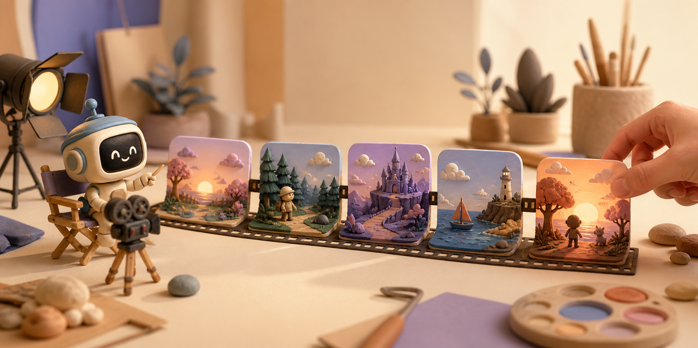
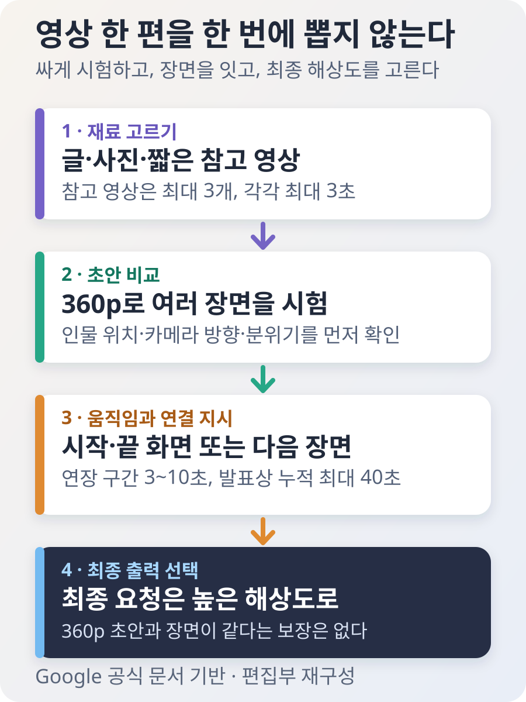
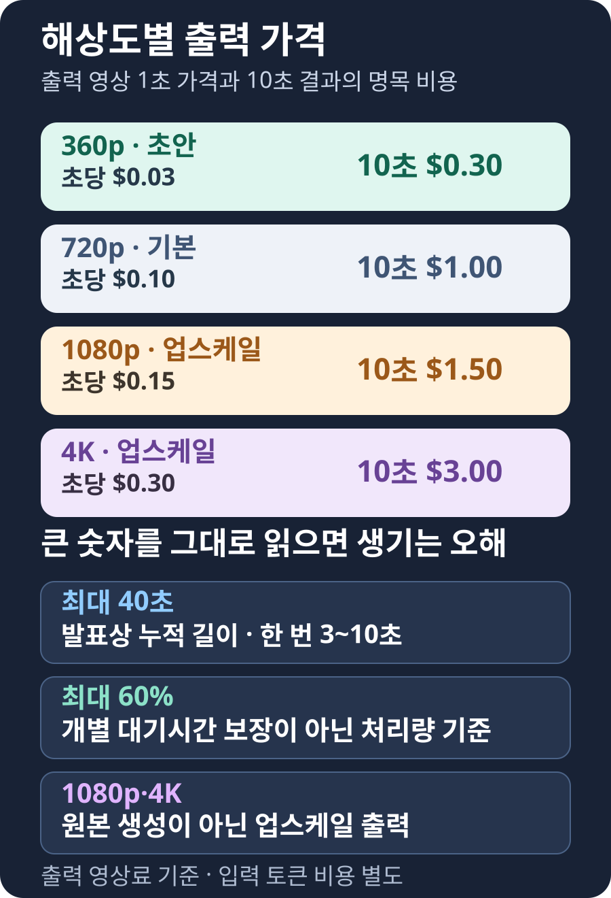

구글, 짧은 AI 영상을 이어 최대 40초로 만드는 Gemini Omni 1.1 Flash 공개
구글이 영상 생성·편집 AI ‘Gemini Omni 1.1 Flash’를 공개했다. 이 AI는 마음에 든 영상 뒤에 3~10초짜리 다음 장면을 붙여, 구글 발표 기준 누적 최대 40초까지 이어 준다. 첫 화면과 마지막 화면을 정해 그 사이의 움직임을 만들 수 있고, 360p 초안부터 4K 출력까지 고를 수 있다. 다만 360p에서 고른 장면이 고해상도 결과에서도 똑같이 나온다는 보장은 없다.

짧은 광고 영상의 앞부분은 마음에 드는데 결말만 아쉽다고 해보자. 전에는 전체 영상을 다시 만들며 좋은 앞부분까지 잃기 쉬웠다. 이제는 그 영상을 남겨 두고 뒤에 이어질 장면만 새로 부탁할 수 있다.
Gemini Omni는 구글 딥마인드가 만든 영상용 AI다. 말로 장면을 설명하거나 사진과 짧은 영상을 참고 자료로 주면 영상과 소리를 함께 만든다. 구글의 모델 문서에 따르면 한 번에 만드는 길이는 3~10초이고 영상은 초당 24장이다. 출력은 360p·720p·1080p·4K 가운데 고를 수 있다.
예를 들어 원두가 쏟아지는 장면을 먼저 만든 뒤, 카메라가 컵으로 이동하는 3~10초를 붙이고, 마지막에 사람이 컵을 드는 장면을 더할 수 있다. 발표에 나온 ‘최대 40초’는 이렇게 짧은 구간을 여러 번 이어 만든 누적 길이다. 버튼 한 번으로 40초짜리 완성 영상을 내놓는다는 뜻은 아니다.
마음에 든 장면은 남기고 다음 장면만 붙인다
구글은 8월 27일 공식 발표에서 새 모델이 다음 장면을 만들 때 앞 영상을 더 길게 본다고 설명했다. 이전 버전은 마지막 1초만 참고했지만, 1.1은 끝나기 전 최대 10초를 살펴본다. 인물의 옷과 조명, 카메라 움직임이 갑자기 바뀌는 일을 줄이려는 변화다.
최신 API 문서에는 한 번에 붙이는 길이가 3~10초라고 적혀 있다. 구글 발표문은 10초씩 이어 누적 최대 40초까지 늘릴 수 있다고 설명한다. 다시 말해 40초를 한꺼번에 생성하는 기능이 아니라, 결과를 보며 다음 짧은 장면을 계속 붙이는 기능이다. 연결을 자연스럽게 만들려고 입력 영상의 마지막 부분이 조금 바뀔 수 있어 단순히 두 파일을 맞붙이는 것과도 다르다.
내가 직접 올린 영상은 조건이 더 까다롭다. 연장할 영상은 10초 이하여야 하며 새 장면은 맨 뒤에만 붙는다. 영상 앞에 장면을 추가하거나 중간만 늘릴 수는 없다. 사람이 말하는 외부 영상을 올리고 그 대사를 계속 이어 말하게 하는 기능도 현재는 제한된다.
Gemini Omni가 바로 앞 단계에서 만든 영상은 다르다. 그 영상과 대화 기록을 함께 이어 갈 때는 음성 대화도 연장할 수 있다. 따라서 ‘내가 올린 영상’과 ‘AI가 방금 만든 영상’은 같은 연장 기능을 써도 가능한 일이 서로 다르다.

첫 화면과 마지막 화면을 주면 중간 움직임을 만든다
두 장의 사진만으로 출발과 도착을 정할 수도 있다. 첫 사진은 정면을 보는 사람, 마지막 사진은 카메라가 옆으로 돌아간 모습이라면 AI가 그 사이의 카메라 이동과 사람의 움직임을 영상으로 채운다. 구글은 이 기능을 두 핵심 화면 사이를 잇는 영상 보간이라고 부른다.
중요한 변화는 결말을 미리 보여 줄 수 있다는 점이다. 기존에는 첫 장면을 줘도 마지막에 상품이 어디에 놓일지 통제하기 어려웠다. 이제 상품이 화면 중앙에 도착하는 장면, 처음과 끝이 이어지는 반복 영상, 한 방에서 다른 방으로 이동하는 카메라처럼 원하는 도착점을 지정할 수 있다.
움직임을 보여 주는 짧은 참고 영상도 넣을 수 있다. API 문서의 제한 사항에 따르면 최대 3개, 각각 최대 3초까지 받는다. 춤 동작이나 인물의 생김새를 참고시키는 용도이며 참고 영상의 소리는 쓰지 않는다. 여러 긴 영상을 이해해 새 줄거리로 합치는 기능은 아니다.
먼저 360p로 싸게 시험하고, 쓸 장면만 크게 만든다
비용을 아끼려면 360p를 완성본이 아니라 스케치로 쓰는 편이 낫다. 720p보다 픽셀 수가 적어 큰 화면에서 볼 최종 영상보다는 구도와 움직임을 빠르게 확인하는 데 맞는다. 화면 방향에 따라 실제 가로·세로 치수가 달라지므로 ‘세로 픽셀 수가 언제나 360개’라는 뜻은 아니다.
출력 영상 1초 가격은 360p 0.03달러, 기본 720p 0.10달러, 1080p 0.15달러, 4K 0.30달러다. 10초 결과 하나를 단순 계산하면 각각 0.30달러, 1달러, 1.50달러, 3달러다. 여기에 입력한 글·이미지·영상·오디오의 토큰 비용은 따로 붙는다. 마음에 들지 않아 버린 초안과 다시 만든 횟수까지 합치면 실제 비용은 더 커진다.
구글은 360p가 기본 720p보다 최대 60% 빠르고 비용은 약 3분의 1이라고 밝혔다. 여기서 ‘60% 빠르다’는 한 사람이 기다리는 시간이 반드시 그만큼 줄어든다는 뜻이 아니다. 구글이 잰 값은 같은 시간에 시스템 전체가 처리한 영상량이다.
현실적인 순서는 360p로 여러 구도와 지시문을 시험한 뒤, 쓸 후보가 정해지면 높은 해상도로 다시 요청하는 것이다. 처음부터 모든 후보를 4K로 만들면 10초당 명목 출력 비용은 360p의 열 배다. 다만 고해상도로 다시 요청했을 때 360p 초안과 장면 하나하나가 완전히 같게 나오는 기능은 아니다.
4K 표시는 영상을 크게 보여 줄 뿐, 틀린 장면을 고치지는 않는다
1080p와 4K에는 꼭 알아둘 단서가 있다. 공식 개발 문서는 두 해상도를 모두 ‘업스케일된 출력’이라고 적었다. 처음부터 네이티브 4K로 그린다고 설명한 기능은 아니라는 뜻이다. 어떤 내부 방식으로 키우는지, 기존 360p 결과를 그대로 크게 다시 내보내는 전용 기능인지는 공개 문서만으로 알 수 없다.
업스케일은 큰 화면에서 보기 좋은 결과를 만드는 데 도움을 준다. 하지만 잘못 그린 손가락, 장면 사이에서 달라진 얼굴, 틀린 간판 글자를 바로잡아 주는 기능은 아니다. 화면의 픽셀 수가 늘어나는 것과 영상 내용이 정확해지는 것은 다른 문제다.
화면 방향도 해상도와 따로 정해야 한다. 공식 API는 가로 16대 9와 세로 9대 16을 지원하고 기본값은 가로다. 인스타그램 릴스나 유튜브 쇼츠를 만들려면 360p 초안부터 세로 비율로 시험하는 편이 낫다. 가로 영상을 만든 뒤 해상도만 올린다고 세로 구도가 생기지는 않는다.
구글 딥마인드 모델 카드도 편집 뒤 인물과 배경을 똑같이 유지하는 일, 복잡한 움직임, 정확한 글자 생성이 여전히 어렵다고 밝힌다. 생성 영상에는 AI가 만든 결과임을 확인하는 보이지 않는 SynthID가 들어가지만, 영상 내용이 사실이라는 인증은 아니다. 공식 기술 설명은 영어를 완전히 지원한다고 적었지만 다른 언어는 아직 평가하지 않았으므로 결과가 달라질 수 있다.
장면을 여러 번 붙이면 이런 오류도 함께 쌓일 수 있다. 해상도를 높이기 전에 연결 부위를 하나씩 재생하며 얼굴과 손, 배경 물체, 소리가 자연스럽게 이어지는지 봐야 한다. 큰 화면으로 만든 뒤에야 문제를 찾으면 다시 생성하는 비용도 커진다.

독립 보도도 큰 숫자의 범위를 구분했다. The Decoder는 40초가 10초씩 붙인 누적 길이라고 정리했다. 일본 Impress Watch는 최대 60%가 시스템 처리량을 뜻하며 1080p·4K는 업스케일 출력이라고 설명했다. 40초·60%·4K가 모두 눈에 띄지만 서로 다른 내용을 가리킨다.
최대 40초로 늘릴수록 연결 부위를 더 많이 살펴야 한다
3~10초씩 붙이면 영상은 길어지지만 사람이 확인할 경계도 늘어난다. 앞 장면의 컵 색이 다음 장면에서 달라지거나 창문 위치와 그림자 방향이 바뀔 수 있다. 마지막 최대 10초를 참고한다는 설명은 이런 오류가 사라졌다는 보증이 아니라, 이어 그릴 때 보는 앞부분이 넓어졌다는 뜻이다.
첫 화면과 끝 화면을 정해도 중간 움직임까지 모두 정해지는 것은 아니다. 같은 두 장을 넣어도 카메라가 도는 방향이나 물체가 이동하는 길은 결과마다 달라질 수 있다. 중요한 장면은 낮은 해상도로 후보를 여러 개 만든 뒤 손·얼굴·글자·배경을 구간별로 확인하는 편이 현실적이다.
40초의 명목 비용도 해상도에 따라 크게 달라진다. 재생성 없이 40초를 모두 만들었다고 단순 계산하면 360p 1.20달러, 720p 4달러, 1080p 6달러, 4K 12달러다. 입력 토큰 비용과 환율·세금·플랫폼 수수료는 빠진 값이다. 실제로는 버린 결과와 다시 만든 장면에도 돈이 들기 때문에 완성 영상 길이만 보고 예산을 잡으면 부족하다.
제작 도구를 운영하는 회사라면 ‘영상 1초 가격’과 함께 채택률도 봐야 한다. 초안 열 개 가운데 두 개만 썼다면 나머지 여덟 개에도 비용과 대기 시간이 들었다. 한 편을 만들며 생성한 전체 길이, 버린 초안 수, 다시 만든 횟수를 기록해야 이전 방식보다 정말 경제적인지 알 수 있다.
한국 이용자는 여러 초안을 만든 뒤 하나만 키우는 편이 낫다
짧은 광고·교육 영상·세로형 소셜 영상을 만드는 사람에게 가장 쓸모 있는 변화는 초안과 완성본의 비용을 나눌 수 있다는 점이다. 360p에서 지시문과 구도를 시험하고, 첫·끝 화면으로 도착점을 잡은 뒤, 마지막 요청에서 필요한 해상도를 고를 수 있다. 단, 고해상도 결과가 달라질 가능성까지 다시 확인해야 한다.
대한민국은 Google AI Studio와 Gemini API 지원 지역이다. 모델 코드는 gemini-omni-1.1-flash이며 Gemini API 유료 티어와 Gemini Enterprise Agent Platform에서 제공된다. Google AI Plus·Pro·Ultra 구독자는 전 세계 Flow에서 모델을 이용할 수 있고, Gemini 앱에서는 장면 연장 기능을 쓸 수 있다. 어느 제품에서나 기능과 사용량이 같다고 생각하면 안 된다.
처음에는 짧은 장면 하나로 시험하면 된다. 같은 지시문으로 360p 후보 세 가지를 만들고 인물과 배경이 얼마나 유지되는지 비교한 뒤, 같은 재료로 1080p 최종 요청을 해 본다. 두 결과가 같을 것이라고 믿지 말고 구도와 움직임을 다시 확인한다.
마지막 판단은 사람이 해야 한다. 제품 이름·가격·의료나 교육 정보처럼 틀리면 곤란한 글자는 영상 안에서 만들지 말고 편집 프로그램으로 따로 넣는 편이 안전하다. 실제 인물이나 상표를 참고 자료로 올릴 때는 초상권·저작권과 회사 자료의 외부 전송 허용 범위도 먼저 살펴야 한다.
한 번에 뽑는 영상 AI에서 장면을 이어 만드는 도구로 바뀐다
기존 영상 AI는 한 문장을 넣고 좋은 결과가 나오기를 기다리는 복권에 가까웠다. 이번 업데이트는 사람이 출발 장면과 도착 장면, 다음 3~10초, 참고할 움직임, 출력 해상도를 나눠 고르게 한다. 한 번의 운보다 작은 선택을 이어 가는 작업에 가까워진 것이다.
그렇다고 40초짜리 완성 영화를 한 번에 만들거나 4K를 고르면 오류가 사라지는 것은 아니다. 구글이 내놓은 것은 짧은 장면을 싸게 시험하고, 마음에 든 부분 뒤에 다음 장면을 붙여 가는 도구다. 화려한 한 번의 생성보다 이 반복 가능한 과정이 실제 제작자에게 더 중요한 변화다.
출처와 더 읽을 자료
- Google 공식 발표: Gemini Omni 1.1 Flash의 새 기능·속도 조건·가격·제공 범위
- Google AI for Developers: 모델 코드, 입력·출력 형식, 영상 길이와 해상도
- Google Gemini API: 생성·첫/끝 화면·연장·참고 영상·제한 사항
- Google DeepMind 모델 카드: 학습 개요, 알려진 한계, 안전과 SynthID
- The Decoder: 기능·가격·이전 버전과의 차이 정리
- Impress Watch: 해상도별 가격, 처리량 기준 속도와 제공 경로 확인
- XenoSpectrum: 40초 누적 연장과 4K 업스케일 구분